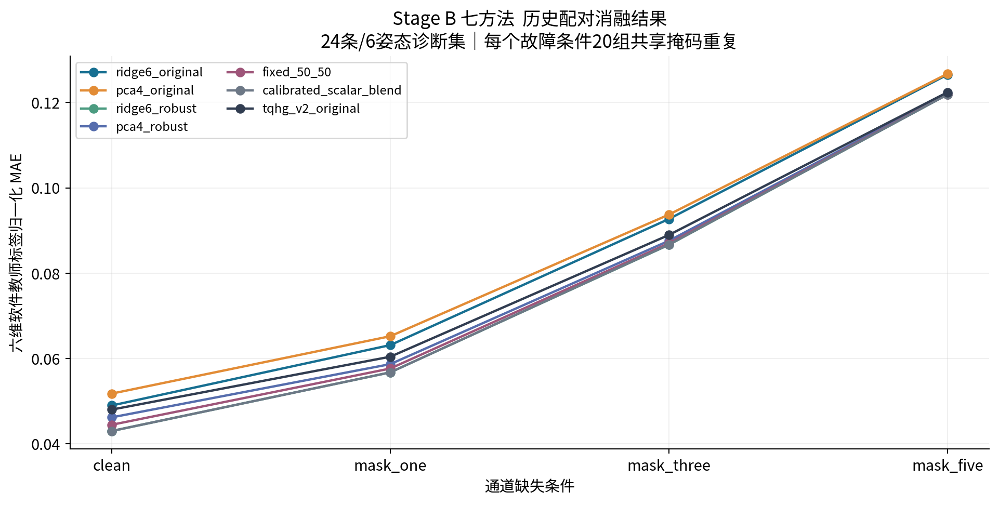

软件教师六维标签归一化MAE｜24条诊断记录、6类姿态｜各故障条件20组共享缺失掩码
| 条件 | 原Ridge6 | 原PCA4 | 增强Ridge6 | 增强PCA4 | 固定混合 | 校准融合 | 原TQHG-v2 |
|---|---|---|---|---|---|---|---|
| clean | 0.04901 | 0.05179 | 0.04303 | 0.04623 | 0.04449 | 0.04303 | 0.04805 |
| mask_one | 0.06317 | 0.06524 | 0.05677 | 0.05870 | 0.05768 | 0.05677 | 0.06044 |
| mask_three | 0.09271 | 0.09374 | 0.08666 | 0.08760 | 0.08701 | 0.08671 | 0.08896 |
| mask_five | 0.12652 | 0.12673 | 0.12188 | 0.12212 | 0.12193 | 0.12188 | 0.12240 |

增强Ridge6在五列屏蔽下MAE为0.12188，原Ridge6为0.12652；增强与原模型训练条件不同，差异不能直接归因于维数。融合/降维方法没有全面领先。20组掩码不是480条独立动作；这不是新的盲测泛化或物理抓握验证。报告中的理想选择器不可部署。